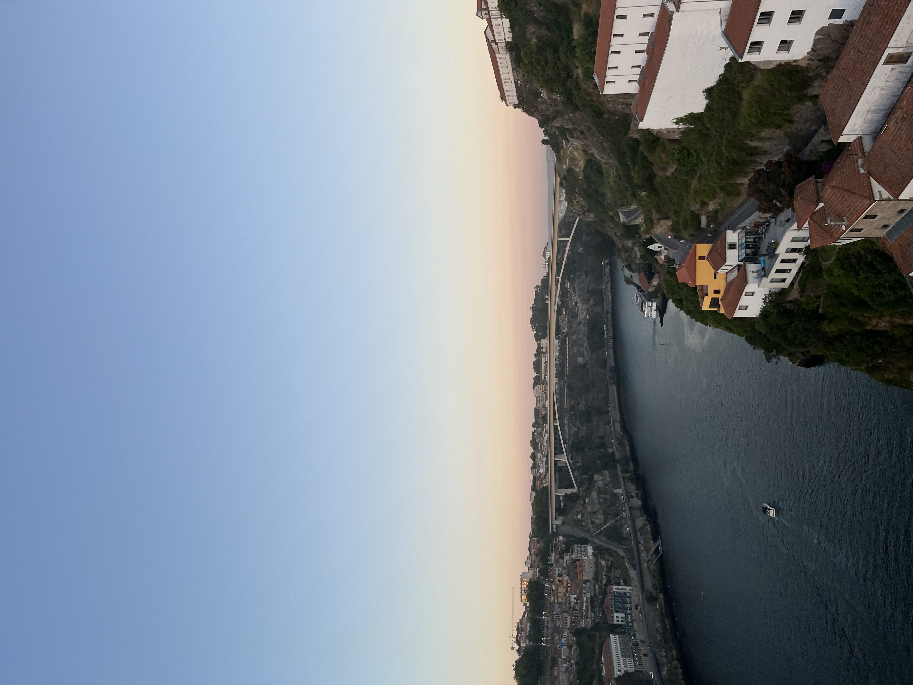

Explore the wonders of international destinations and experience diverse cultures.
Welcome to my international travel page. Some destinations I have been to include India, Spain, Portugal, Aruba, Turks and Caicos, and the Dominican Republic. Whether you're looking for a beach vacation or to explore a new country, there are several options. Below is a picture in Lisbon, Portugal. This country is known for their wine valleys, amazing food, and beautiful views. There is a lot of history in this country and was an amazing trip. I would reccomend getting a rental car just to drive to nearby vineyards. You won't need a car for the main city, as they have trolleys that take you around town. Lisbon is a gorgeous city filled with amazing restyrants and farmers market. There is a huge emphasis on sangria, they serve it everywhere. Below is one of my favroite pictures from Lisbon.
